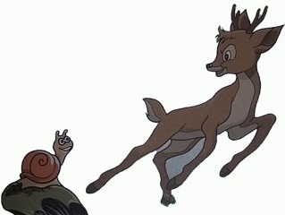
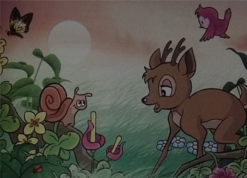
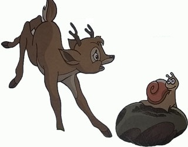

Si Rusa dan si Kulomang
( Cerita Rakyat Maluku Utara )
Di sebuah hutan di Kepulauan Aru, hiduplah sekelompok hewan. Mereka hidup berdampingan dengan rukun dan damai. Namun, akhir-akhir ini sesuatu mengusik mereka, yaitu kesombongan sekelompok rusa yang merasa diri sebagai hewan paling hebat hanya karena mereka mampu berlari cepat. 
Semakin hari, kesombongan mereka semakin menjadi-jadi. Mereka terus saja mengajak hewan lain berlomba lari dan mengejek mereka. Lama-kelamaan, mereka juga menjadi tamak. Rusa tak hanya menantang hewan lain untuk berlomba lari, mereka juga menyita tempat tinggal hewan yang kalah dalam perlombaan itu.
Sementara itu, tak jauh dari hutan, yaitu di tepi Pulau Aru, hiduplah sekelompok siput laut. Tempat tinggal mereka indah dan udaranya masih segar. Meskipun siput laut yang tinggal di sana cukup banyak, mereka saling setia kawan. Kelompok rusa yang mengetahui wilayah itu, ingin menguasainya. Seperti biasa, pemimpin rusa berniat mengajak siput laut untuk berlomba lari melawannya. Lalu ia menemui pemimpin siput Laut yang bernama Kulomang. Di luar dugaan, Kulomang menerima tantangannya. Sebenarnya rusa terkejut mendengar jawaban Kulomang, tapi ia tertawa dalam hati.
Keesokan harinya, pemimpin rusa telah siap di tempat pertandingan. Rusa-rusa yang lain ikut untuk memberi semangat. Kulomang datang sendiri, tak ada teman yang menemaninya. Diam-diam, Kulomang telah mengatur strategi bersama teman-temannya. Ia sebenarnya membawa sepuluh temannya, namun mereka bersembunyi untuk mendengarkan aturan pertandingan. Setelah mendengar semuanya, kesepuluh siput laut itu menempatkan diri masing-masing di tempat perhentian yang telah ditentukan.
Rusa lari dengan santai sementara Kulomang berlari dengan tenang. Tak terasa, rusa telah tiba di perhentian pertama. Ia menoleh ke belakang dan tersenyum, "Pasti siput itu masih jauh di belakang,"
"Siapa bilang aku masih di belakang?" tiba- tiba terdengar jawaban Kulomang. Sebenarnya itu bukan Kulomang, melainkan temannya yang menunggu di pemberhentian pertama. Rusa terkejut setengah mati, ia heran bagaimana Kulomang bisa mendahuluinya?
Tak mau kalah, ia berlari melesat menuju pemberhentian kedua. "Hehe... kali ini pasti ia kalah," ejek rusa sambil menengok ke belakang lagi. Tapi apa yang terjadi? Tiba-tiba Kulomang sudah berjalan di depannya dan menuju ke pemberhentian ketiga. Rusa terkejut, Ia berlari lagi secepat mungkin. Ia tak mau kalah dari Kulomang. Namun setiap kali ia tiba di perhentian, selalu saja Kulomang sudah ada di depannya.
Rusa kelelahan, namun ia terus berlari kencang. Akhirnya ia tiba di perhentian terakhir. Matanya terbelalak ketika ia melihat Kulomang telah menantinya si situ. Karena kelelahan, rusa pun jatuh tersungkur. Ia malu, apalagi ternyata hewan-hewan yang lain juga menyaksikan pertandingan itu. Rusa sangat malu, rupanya ia bukanlah hewan terhebat. Demikian juga dengan teman-temannya, mereka tak lagi sombong. Mereka bahkan mengembalikan wilayah-wilayah yang direbut dari hewan-hewan yang lain. Sejak saat itu, keadaan di hutan kembali damai seperti dulu. Tentunya tak seekor hewan pun yang membocorkan rahasia Kulomang pada rusa-rusa itu.